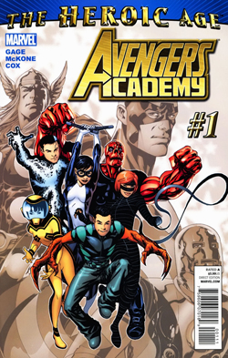
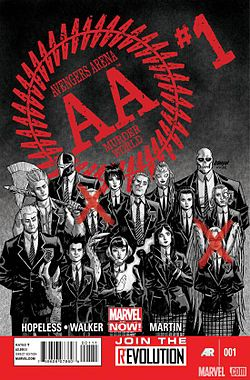

These drawing are some of my recent ones because of an argument I had with a friend. The argument
was about the appeal of leather jackets and dresses. The first drawing I thought had a good design
but everyone disagreed cause they didn't expect a frilly princess dress. The second one I tried to
draw with a sleak, black dress but drew too big so you can't even see the rest of the dress.
Comics

Fig. 3 - Cover for Avengers Academy Issue #1
This is one of the comics I had been reading recently. I was interested in the type of premise of a
superhero academy. I'm usually a sucker for teenage adventure stories. The read was good and half of
the characters were introduced as jerks, while the other half were typical teenagers. But after a while
they had their character growth and it was nice. New characters were also introduced and I didn't
expect White Tiger or X-23 to be added to their roster. It sucks they aren't shown more in other comics.

Fig. 4 - Cover for Avengers Arena Issue #1
The next time some of the Avengers Academy roster gets the spotlight is in this comic. At first it was
an interesting concept but I really just hated it. Most of the characters had potential and I had connected
with a lot but the concept for Avengers Arena was meant to be a battle royale, Hunger Games-like deathmatch.
There were many characters from other series like the Runaways or Drax. Some characters that I liked usually died
and most people acted irrationally. Overall, it was suspenseful but it killed off so much potential for some characters
which made me grow to dislike it.
Shows and Films
Fig. 5 - Poster for Scott Pilgrim VS. The World
This is one of my favorite movies because of the romance, action, and chaotic energy of it. At first I had never
heard of the movie but I accidentally stumbled upon it browsing for something to watch. At first I just thought it
was a romance story but then a vampire-like character busted in and fought the main character and I was more invested
than I thought I was going to be. The romance seemed nice too cause I liked their dynamic of the awkward guy and cool girl.
Fig. 6 - Poster for ERASED
This is one of my favorite anime to rewatch. At first glance I thought it was going to be about a kid who was erased from
existence and everyone forgot about him. But the story was way better than I imagined and I loved the mystery. Most mystery
usually is interesting to watch but sometimes never had a thriller part to it that Erased had. The way the main character narrates
felt great somehow too, but I can't really explain it.